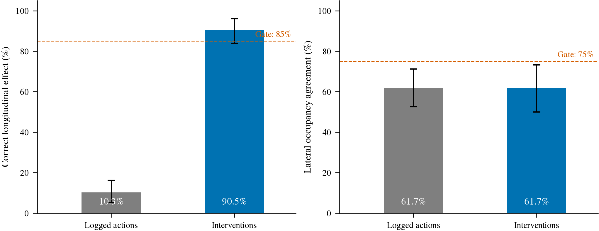
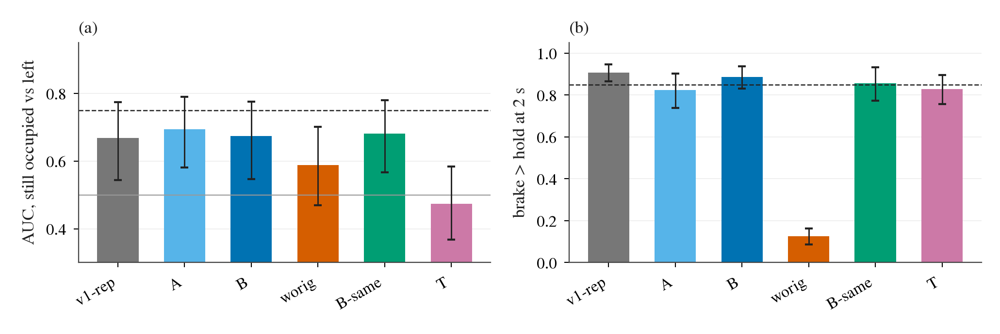
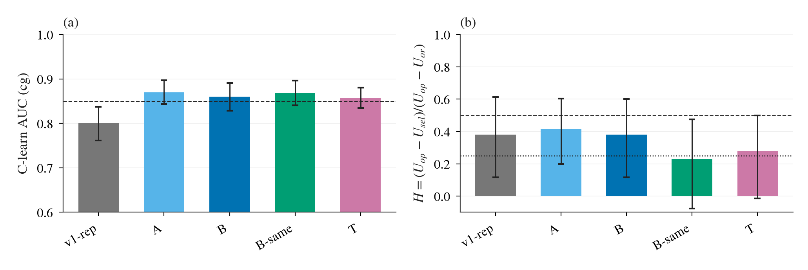
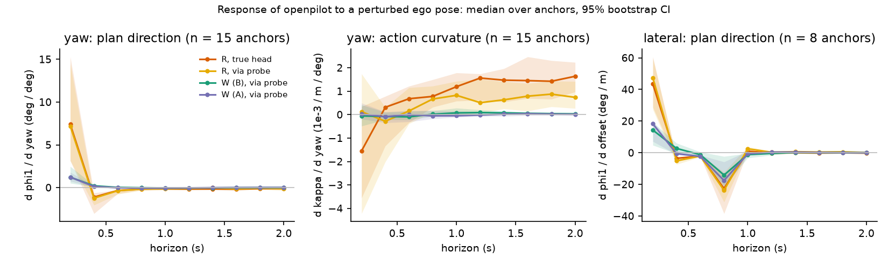

世界模型与反事实配对：搁置与 no-go 汇总
核心结论（反事实配对与世界模型闭环归宿）：
1. 配对差分反应头走出仿真即有害：在 CARLA P5 考卷上激发的双流反应头（Qwen ⊕ openpilot）能将行人翻转率拉至 43.3%（决策 42），但零样本迁移至真实数据（WOD RFS −1.02，NAVSIM PDMS −8.2）证实显著有害（决策 44）。真实数据门控（g2/g3）只能等比缩减残差而无法消除系统偏置，叠加至榜单最优 Hydra 头导致 PDMS 掉 5–8 分（决策 53），“能力包”假设彻底破灭。
2. 生成式编辑与特征适配全面受阻：3DGS 插入/删除路线（P3）因供体滑行、背景光晕与删车涂抹被用户终止（决策 44）；Cosmos-Transfer2.5 / ControlNet 因删人不干净（红色鬼影）整体暂停（决策 59）；CARLA 行人在 openpilot 各层池化特征 AUC 仅 0.51–0.53，重画未带来任何信息增益，主导变量为像素尺寸（< 500 px 仅 0.57，决策 62、63）；CARLA 就地回退（rewind）分支因无法恢复传动系与轮胎物理被证实不等价于从头生成（决策 65）。
3. WL-2 隐空间世界模型正式判定 no-go：在新留出分叉（210 点）严格预登记判格下，C2 碰撞 AUC（0.860）达标，但 C3a 决策挽回率 H 仅 0.380 [0.115, 0.600]（未达 0.50 且下界低于 0.25），C1c 横向被占可分性仅 0.674（未达 0.75）。按登记规则直接裁定 no-go，否定基于潜在空间世界模型想象决策的可行性（决策 76）。
4. 几何重投影全面压制世界模型：在自车偏离扰动下，现有世界模型 WL-2 偏航响应仅 1.2 °/°，比真实几何重投影（7.4 °/°）低估约 5 倍（决策 123）。工业级 comma worldmodel-4B 强制依赖未来 5 个 anchor 画面，本质是逆动力学仿真器，无法直接零样本当策略主干（决策 139）。
5. 分解式世界模型（factor_wm）架构与闭环教训：唯一幸存的设计原则为“自车精确解析几何、外生复用工业预训练、反应残差仅学干预数据”（决策 141）。但在第 1 阶段（G0/G1）闭环验证中，引擎内虽将起步停滞由 0.18 压至 0.02，迁至 HUGSIM 却反弹至 48/64（决策 143）；开环虽在 navhard 取得 +2.58 分，闭环起步再次受阻（决策 146），揭示出“画面运动与起步决策”在数据层面的深层解耦难题。
一、反事实配对监督与反应头迁移的失败（决策 42, 44, 48, 53）
为解决端到端模型对弱势交通参与者（行人/骑车人）以及紧急切入（cut-in）的反应迟钝问题，项目早期探索了基于反事实对的差分监督机制。核心构想是：固定自车状态，对比“有危险物”与“无危险物”的一对仿真场景，训练一个轻量反应头（reaction head）输出残差修正量 Δ。
1. CARLA P5 考卷上的成功
在 CARLA P5 v1 BehaviorAgent（BA）评测集（101 条路线、406 个行人反应帧）上，基于 Qwen L18_last ⊕ openpilot temporal 的双流线性反应头（M-C）取得了显著增益（决策 42）：
- 行人翻转率：Cinque 达 43.3% [35.0, 50.7]，Lebowski 达 41.6% [32.4, 50.0]（对比出厂模型翻转率为 0%，硬样本重加权与均匀模仿仅 0–3%）。
- 切入翻转率：相对 prior 分别提升 +3.1 pp 与 +6.7 pp（CI 不跨零），样本外空翻率稳定在 5.0%–5.1%。
- 20 Hz 学生模型（E5）：使用 openpilot
temporal ⊕ YOLO26x-seg 走廊检测嵌入经轻量 MLP（端到端延迟仅 30 ms），在 CARLA 内取得 51%–57% 的行人翻转率。
2. 走出 CARLA：零样本迁移到真实数据全面有害
然而，当将该反应头直接迁移到真实数据（Waymo Open Dataset 与 NAVSIM）时，所有评估指标均显著恶化（决策 44）：
| 模型与评测项 | WOD 全部帧 RFS Δ [95% CI] | WOD 行人子集 RFS Δ | NAVSIM navtest PDMS Δ | NAVSIM 行人/骑车人 PDMS Δ | 直行误激活率 |
|---|
| Cinque M-C 双流（E1） | −1.02 [−1.21, −0.82] | −1.19（CI 全 < 0） | −8.2 [−8.9, −7.5] | −6.0 | 16.7% / 14.1% |
| Lebowski M-C 双流（E1） | −1.52 [−1.74, −1.30] | −1.35 | −11.2 | −11.2 | 40.7% / 60.0% |
| Cinque Student A（G0，无 Qwen） | −0.11 [−0.20, −0.03] | −0.17 [−0.51, +0.12] | −1.30 [−1.55, −1.04] | −1.30 [−2.17, −0.49] | 4.2% / 1.4% |
| Lebowski Student A（G0） | −0.05 [−0.12, +0.01] | +0.10 [−0.05, +0.32] | −2.00 [CI 全 < 0] | −1.70 | 2.8% / 2.9% |
数据来源：research/decisions/044.md、experiments/elicitation/results/、experiments/real_transfer/results/g0/。
诊断表明：CARLA 配对激发的 Δ 在真实特征分布上表现为一个强烈的非零系统偏置，在直行安全帧上的误激活率与危险帧无异。换用 WOD 训练统计量做跨域标准化仅能将损害减半。
3. 真实门控（Gate）与能力包假设破灭
进一步尝试引入在真实数据上拟合的门控机制（g2 目标检测概率门、g3 前车 TTC 门）来抑制误激活（决策 44、53）：
- 门控仅能等比缩放：g2 将残差整体压缩至约 1/6，虽然消除了 WOD 整体损失（Δ −0.03），但在行人帧上完全不为正（+0.09 [−0.04, +0.23]）；在 NAVSIM 上仍产生 −1.61 分的净损失。
- 前车常数刹车等价性：g3 × Δ 在 NAVSIM 上产生的少量正向收益（PDMS +0.46），完全等价于一个与场景无关的常数减速（g3 × 常数刹车达 +0.53，配对差异表明 M-C 差于常数刹车，决策 44 G1c）。该增益来自前车减速规则，与反事实配对学习无关。
- 能力包（Skill-Pack）破裂：将带门控的反应头（g2 · Δ）叠加至 NAVSIM 榜单最优打分头（Hydra，基线 84 PDMS）上，NAVSIM PDMS 净跌 −5.14 分（Cinque）与 −8.33 分（Lebowski）（决策 53）。“独立研发通用反应能力包并无损外挂”的工程设想被彻底否定。
- 真实日志对与抹人编辑的失败：从真实日志中按自车状态挖出的未来分叉对（E3，4 万对），分叉原因多为道路几何与变道，无行人避让信息；基于 SAM + LaMa 的真实帧反事实抠图编辑（E2，911 对）信噪比极低，Qwen 特征位移仅比安慰剂大 21%，拟合的反应头在 WOD 上净损失 −2.16 分（决策 44）。
二、生成式编辑与特征适配路线的瓶颈（决策 44, 56, 59, 62, 63, 65）
1. 3DGS 插入与删除路线的终止（P3）
利用 3D Gaussian Splatting（OmniRe / drivestudio）在 WOD 真实重建场景中进行动态物体插入与删除的尝试遭遇严重画质缺陷，于 2026-09-28 经人审被整体叫停（决策 44）：
- 插入行人滑行动作：供体节点仅能重放录制时的静态姿态，在自车前视视角中呈现为“平移滑动”而非逼真步行；且供体外围 Gaussian 带有源场景背景光晕。
- 删车背景涂抹：静止前车删除后，被遮挡区域缺乏背景先验约束，呈现严重模糊涂抹甚至车辆残影。
- 有效题量匮乏：严格限定“车道内、4 秒内接近、连续可见”的考核帧在 10 个场景中为 0 道题；扩至 60 场景删除考卷工程不可达。
2. 扩散模型 ControlNet 配对的搁置（Cosmos Edge）
使用 Cosmos-Transfer2.5 Edge Distilled 结合 Canny 边缘控制在真实 WOD 片段上构建成对视频（19 个场景，决策 59）：
- 删人不干净：x⁻ 分支无法彻底消除目标行人，原位置频发红色“鬼影”人形或比人体更大的矩形涂抹块。
- 插入逼真度不足：步态循环插入偏假，且存在色彩漂移与画幅底部黑色伪影。整条生成式配对线确认无限期搁置。
3. 特征适配（Feature-Adapter）的理论边界
既然像素生成不可行，特征层是否可以直接对齐 CARLA 与真实数据？逐层线性探测实验（E0 / E1）给出了否定裁决（决策 62、63）：
| 网络深度 / 探测层 | CARLA 行人 AUC [95% CI] | 真实 nuScenes 走廊行人 AUC [95% CI] | Cosmos 重绘 CARLA 行人 AUC |
|---|
| stage 1 | 0.526 [0.508, 0.556] | 0.715 [0.628, 0.799] | 0.725 |
| stage 2 | 0.523 [0.504, 0.548] | 0.740 [0.644, 0.821] | 0.743 |
| stage 3 (trunk) | 0.523 [0.507, 0.544] | 0.831 [0.758, 0.895] | 0.746 [0.712, 0.782] |
| stage 4 | 0.522 [0.502, 0.546] | 0.748 [0.666, 0.813] | — |
| vision (pooled) | 0.509 [0.499, 0.520] | 0.702 [0.599, 0.785] | — |
| temporal | 0.506 [0.499, 0.515] | 0.709 [0.598, 0.799] | 0.680 |
数据来源：research/decisions/062.md、research/decisions/063.md、experiments/feature_adapter/results/。
关键发现：
(1) 判格 G-none：在 CARLA P5 帧中，行人特征在 stage 1–4 各层池化特征上全部平躺在 0.51–0.53，毫无上升趋势；特征适配器无处安放（决策 62）。
(2) 尺寸决定论：Cosmos 像素重绘未能恢复可读性（AUC 0.746 对比原图 0.815 反而略降）。决定可读性的核心变量是行人像素数：< 500 px 的目标在两类画面中 AUC 均为 0.57，≥ 1500 px 时升至 0.83–0.92（决策 63）。问题本质是远距离分辨率瓶颈，而非图像生成风格域差。
(3) CARLA 就地回退（rewind）分支不等价：在 Bench2Drive 中尝试以回退状态代替从头生成的测试表明（决策 65）：虽然节省约 3 倍时间，但传动系、轮胎动力学与 Traffic Manager 状态无法通过 API 还原（cut-in 车位置误差达 0.39 m，碰撞标签一致率超标），正式定为不可等价替代。
三、世界模型 WL-2 判格（C1–C4）与 No-Go 裁定（决策 76, 123）
为检验隐空间世界模型是否具备“想象推演并选出正确反事实策略”的能力，项目开展了第二轮预登记前置检查（WL-2，决策 76）。主评测集包含 40 条评测基准路线在新世界随机种子下的 210 个留出分叉点。

图 1：世界模型因果效应检验闸门对比（源自 research/figs/roadmap/world-model-gates.png）。看点：左图纵向因果效应检验（刹车 vs 保持），干预对监督（Interventions）达到 90.5%，突破 85% 闸门，而仅靠日志训练（Logged actions）仅 10.3%（反向）；右图横向被占走廊可分性检验，干预对训练仅达 61.7%，完全未达到 75% 闸门，且与仅靠日志训练（61.7%）完全不可分，说明横向空间语义无法被潜在世界模型解析。
1. WL-2 C1–C4 判格总表
| 检查条目 | 考察物理量与检验目标 | 预登记通过阈值 | 主判臂 B 测量值 [95% CI] | 判定结果 |
|---|
| C1a | brake_hard 对 hold，推演 2 s 后距离读“刹车更远”比例 | ≥ 85% | 88.7% [83.2, 93.8]（对照 W 12.5%） | 过（纵向因果复现） |
| C1b | 推演位移差 Δd 与真实位移差之中位数误差 | ≤ 3.0 m | 3.44 m [2.62, 4.16] | 不过（误差超标） |
| C1c | 被占走廊横移可分性 AUC；主判臂 B − 原版 worig 差异 | AUC ≥ 0.75 且差值下界 > 0 | AUC = 0.674 [0.547, 0.776]；差值 +0.086 [−0.054, +0.218] | 不过（横向后果无法区分） |
| C2 | C-learn 评价器在推演 latent 上对碰撞（cg）的预测 AUC；同分叉排序 | AUC ≥ 0.85；成对排序 ≥ 80% | AUC = 0.860 [0.829, 0.891]；排序 89.6% | 过（碰撞预测达标） |
| C2(a) | C-learn − 无自车通道基线 Q 的 AUC 优势 | CI 下界 ≥ −0.02 | +0.031 [+0.011, +0.049] | 过 |
| C2(b) | 组合动作泛化下 C-learn − Q 优势（排除训练动作） | CI 下界 > 0 | +0.256 [+0.161, +0.367] | 过（最强泛化项） |
| C3a | 策略挽回率 H = (U_op − U_sel) / (U_op − U_or) | H ≥ 0.50 且 CI 下界 ≥ 0.25；U_op − U_sel 下界 > 0 | H = 0.380 [0.115, 0.600]；U_op − U_sel = +0.144 [+0.040, +0.251] | 不过（挽回率严重不足） |
| C3b | 安全分叉 x⁻ 上 3 秒推演进度比例；新增危险率 | 进度 ≥ 0.90；危险率 ≤ 基线 + 2 pp | 进度 1.12；危险率 8.6% 对基线 11.0% | 过 |
| C4 (行人) | 连续风险评分翻转率，要求 CI 下界高于样本外 null 误翻 + 10 pp | 阈值 17.6%（null 7.6%） | 54.7% [40.7, 66.7]（阳性对照 worig 同为 54.7%） | 过（但不具模型特异性） |
| C4 (cut-in) | 连续风险评分翻转率，高于 null 误翻 + 10 pp | 阈值 17.0%（null 7.0%） | 54.3% [29.1, 77.2] | 过 |
数据来源：research/wl2-results.md、research/decisions/076.md、experiments/world_model/results/wl2/results/results.json。

图 2：WL-2 C1 动作因果检验（源自 experiments/world_model/figs/wl2-c1c.png）。看点：(a) 各模型在被占子集上对“仍被占 / 已离开”的探测 AUC，虚线为 0.75 判格线，所有模型（v1-rep, A, B, B-same, T）均在 0.67–0.69 徘徊，空间 token 臂 T 甚至跌至 0.473；(b) 刹车推演距离正确率，干预训练臂均达到约 88.7%，原版日志模型 worig 仅 12.5%（反向）。

图 3：WL-2 C2 碰撞预测与 C3 决策挽回率检验（源自 experiments/world_model/figs/wl2-c2-c3.png）。看点：(a) 各臂碰撞 AUC 均在线 0.85 附近且彼此不可分；(b) 决策挽回率 H，虚线为 0.50，点线为 0.25（CI 下界要求）。主判臂 B 的 H 仅 0.380，下界仅 0.115，所有臂点估计与区间均未达到预登记标准。
2. 失败深层归因与 No-Go 裁定
依据预登记裁决树，C2 过但 C3a 不过 → 判定为 no-go：
- 规则挽回效率低且附带高伤害：在 79 个可解分叉点上，规则虽挽回了 44 个（56%），但在 121 个原先安全的分叉点上产生了 14 个误伤害（11.6%）。净收益被稀释，H 点估计仅 0.380，CI 下界 0.115 远低于 0.25 门槛。
- 空间可分性缺失（C1c 不通过）：虽然显式自车横向通道能精确预测自车位置（ê_y 误差仅 0.25–0.36 m），但潜在空间占用探针在推演特征上完全分不清障碍物“仍在走廊”还是“已被避让”（AUC 仅 0.674，与无自车通道的 A 臂差异 −0.021，CI 跨零）。引入 2D 空间 Token（T 臂）亦未能改善（AUC 仅 0.473）。
- 无单一固定动作可平衡进度与安全：无脑急刹虽能拿到 H = 0.89，但进度仅剩 25%（严重违反 C3b）。
- 裁定后果：潜在空间世界模型在离线数据中无法学得足够的空间因果分辨力，基于此进行“闭环反事实想象强化学习”丧失了可信度基础，整条线正式停工。
3. 几何重投影对世界模型的降维打击（决策 123）
在对自车运动偏离后画面推演的直接对照实验中（WOD 真实路测片段，决策 123），隐空间世界模型被最朴素的几何重投影（Reprojection）彻底击败：

图 4：自车姿态扰动响应曲线对比（源自 experiments/world_model/figs/wm-vs-reproj-gain.png）。看点：在真实偏航角扰动输入下，R（几何重投影，橙色）在第 1 步产生 7.4 °/° 的偏航补偿增益，真实反映出开环闭环增益；而 W（WL-2 世界模型，绿/紫色）经探针解码仅产生 1.2 °/° 的响应，低估约 5 倍，且从第 3 步起与扰动失去相关性。
- 真实运动还原：平面几何重投影（R）在 2 秒内的轨迹预测误差仅 0.2°–0.5°，曲率误差仅 1.3e-3 1/m；而世界模型 WL-2 的隐空间距离始终停留在持续不变基线水平。
- 偏航增益低估 5 倍：对初始扰动偏航角，重投影产生 7.4 [3.2, 15.3] °/° 的补偿响应（与真车起步反馈同阶），而 WL-2 解码出的偏航响应仅 1.2 °/°（仅为重投影的约 0.2 倍）。世界模型严重迟钝，无法支持闭环偏离恢复训练。
四、工业模型审计与分解世界模型（factor_wm）设计（决策 139, 141, 143, 146）
1. comma worldmodel-4B 工业模型属性审计
为评估 comma.ai 最新发布的 4B 级别视频世界模型（arXiv:2504.19077）能否作为主干策略使用，对其推理机制进行了源码与论文审计（决策 139）：
- 未来锚定本质（Future-Anchored）：该模型输入固定包含 15 个槽位（5 个未来 anchor 帧 + 9 帧历史 + 1 个加噪目标帧），时间跨度 0.2–9.8 s。其 plan head 实质上是一个在看过未来画面之后进行轨迹逆推的逆动力学专家（Inverse Dynamics）。
- 无条件分支缺陷：CFG 的无条件分支仅将自车位姿清零，并不遮挡未来视频画面。模型在“只给历史”的场景下处于完全的分布外（OOD）；若遮挡未来帧，预测直接塌缩。因此，该模型是给定终点目标的生成仿真器，绝对无法零样本当作自驾驾驶策略直接运行。
2. 分解式世界模型（Factorized World Model）构想
吸取前期全面挫败的教训，项目提出了分解式世界模型的核心架构原则（factor_wm，2026-10-05 查新）：
- 自车运动不学（Analytic Ego）：自车动作对自车视角与画面的影响由运动学与路面平面几何重投影精确计算，严禁神经网络拟合自车几何变换。
- 外生动态不从头学（Exogenous Pre-trained）：其他交通参与者的运动与背景演变直接借用工业预训练模型（openpilot 冻结时序状态、lead 前车头、WA-JEPA 特征流等），做微调而非从头预训练。
- 交互残差仅从干预对学（Interventional Residual）：其他车对自车反事实动作的反应，严禁从混淆的观测日志中提取，必须使用仿真 fork 干预对进行监督。
3. 文献查新与新意边界划分
检索 40 余篇文献后确立的最接近工作对比与新意界定如下（research/factorized-world-model.md）：
| 对比基准工作 | 对方已有机制 | 我们的本质差异与新增边界 |
|---|
| comma (2504.19077) | 重投影与未来锚定世界模型两条线，自述偏离恢复不足 | 合二为一：自车走解析几何、外生走预训练、交互走干预数据；量化并归因响应低估 |
| 反事实预测 (2608.11601) | 单目深度点云重投影，冻结世界模型补洞，CARLA 真值 | 对方不训练策略、不建模他车反应；我们在分解空间中闭环训练量产 openpilot 策略 |
| GeoDrive (2505.22421) | 沿自车轨迹 3D 渲染作条件 + 生成其余部分 | 从日志训练，不训策略，不学他车反事实交互反应 |
| CausalDrive (2606.15341) | 他车对自车的反事实反应 + RL 后训练 | 反应完全从观测日志学习，无仿真干预真值，自车非解析精确 |
| RoXDrive / OmniDreams | 工业规模冻结世界模型内做 RL，依赖后验过滤 | 保真度通过物理/几何显式解耦构造保证，而非暴力过滤或无底线扩大参数 |
4. 阶段 1（G0 / G1）实验进展与闭环反思
针对“自车开不起来、低速停滞与急弯失控”的第一阶段验证展现了开环与闭环迁移之间的复杂张力：
- G0 引擎验证（决策 141）：shipped Cinque 在真实日志重投影引擎中，施加扰动后闭环失败率高达 0.52（起步停滞 0.17、航向偏离 0.17、出车道 0.18）。证实起步缺陷源自模型自身（真实帧起步 t0 加速度中位 −0.09 m/s²，急弯曲率仅为日志的 0.63 倍）。同时证实平面重投影优于深度重投影（误差比 0.99 对 0.85），确定以平面重投影为引擎基底。
- G1 闭环挫折（决策 143）：在精确自车引擎内进行 8 s on-policy 策略微调（S3），引擎内起步停滞由 0.18 剧降至 0.02；但迁移至 HUGSIM 64 闭环评测时，起步停滞反而由 18 飙升至 48 个场景，HD 得分跌至 0.182（基线 0.286）。诊断证实：时间同步源帧导致模型学成了“画面动才起步”的错误相关性（静止预热画面下 shouldStop 达 0.98），再次上演“修好停滞却换来碰撞”的分布偏移。
- P2 on-policy 闸门早停（决策 146）：采用修正标签（消除 5 cm 震荡）后，开环评测虽展现正向增益（navhard +2.58 分），但在 HUGSIM-12 闸门场景中起步停滞由 1 恶化至 9，HD 由 0.414 跌至 0.313，触发预登记早停。数据中“静止”与“停车”的语义重叠，构成了端到端策略自适应的核心难题。
五、数据源、代码与决策归档索引
| 研究主题 / 结论 | 关联决策条目 | 关键结果文件与测试报告 | 代码与复现脚本路径 |
|---|
| CARLA 反应头激发与 P5 评测 | 决策 42 | experiments/reactivity/results/reactivity/ | experiments/reactivity/scripts/ |
| 反应头真实迁移全面有害性 | 决策 44 | experiments/real_transfer/results/g0/, g1/, g2/ | experiments/real_transfer/scripts/ |
| Hydra 头叠加能力包破裂 | 决策 53 | experiments/night_queue_2/results/N3/ | experiments/night_queue_2/scripts/ |
| ControlNet / Cosmos 生成搁置 | 决策 59 | research/controlnet-pair-pilot.md | experiments/controlnet/ |
| CARLA 特征适配器不可行性 | 决策 62、63 | experiments/feature_adapter/results/e0-layer/ | experiments/feature_adapter/scripts/ |
| CARLA 回退分支不等价定性 | 决策 65 | experiments/carla_rewind/results/ | experiments/carla_rewind/scripts/ |
| WL-2 C1–C4 判格与 No-Go | 决策 76 | experiments/world_model/results/wl2/results/results.json | experiments/world_model/archive/make_wl2_figs.py |
| 自车偏离扰动：重投影压制 WL-2 | 决策 123 | experiments/world_model/results/wm_vs_reproj.md | experiments/world_model/scripts/ |
| comma worldmodel-4B 审计 | 决策 139 | experiments/wm_policy/results/step0.md | experiments/wm_policy/ |
| 分解世界模型 G0 / G1 阶段验证 | 决策 141、143、146 | experiments/factor_wm/results/g0-verdict.md, g1.md, p2-onpolicy.md | experiments/factor_wm/plans/2026-10-05-stage1-prereg.md |
报告生成规范：jevdrive/CLAUDE.md、docs/agy-reports.md。数据全部基于实测结果文件与决策日志核验，禁止脑补填空。